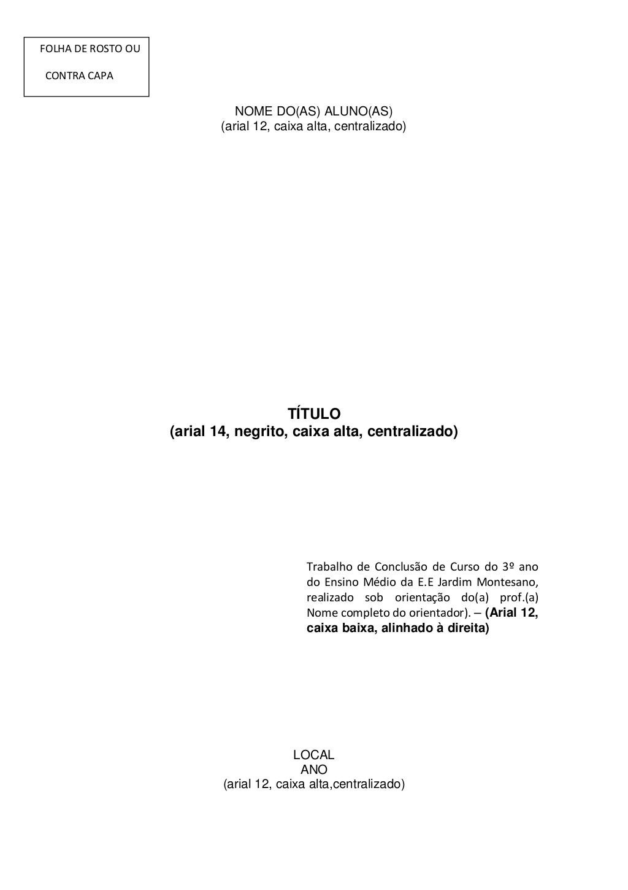

TCC - X
Resumo
Este TCC de nome X foi feito voltado para pessoas das quais necessitem do problema ao qual este trabalho é voltado blá blá blá ...Este TCC de nome X foi feito voltado para pessoas das quais necessitem do problema ao qual este trabalho é voltado blá blá blá ...Este TCC de nome X foi feito voltado para pessoas das quais necessitem do problema ao qual este trabalho é voltado blá blá blá ...Este TCC de nome X foi feito voltado para pessoas das quais necessitem do problema ao qual este trabalho é voltado blá blá blá ...Este TCC de nome X foi feito voltado para pessoas das quais necessitem do problema ao qual este trabalho é voltado blá blá blá ...Este TCC de nome X foi feito voltado para pessoas das quais necessitem do problema ao qual este trabalho é voltado blá blá blá ...
Pré-Visualização
